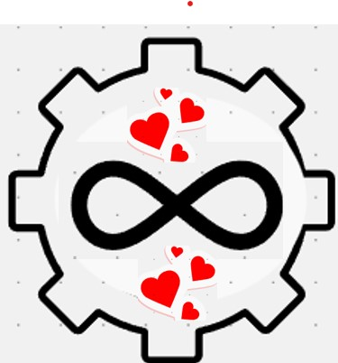

PRIMARY 1 - SCHOOLS:
BOUNDLESS CAPABILITIES
- Huge
- Ranges from Reception to Year 13
- Private school with many diverse people
- Girl's only school
- A big playground, outside
My Experience
- Started in Reception
- Left after Year 1
- Did not have my Kaye Walker
- Couldn't move around easily
- Didn't make many friends easily
- But, everyone tried to help and talk to me
Reason Why I Left?
- Hard for my mum to drop off my brother's and then me
- More extended trip to go to different schools
- Also, I did not make many friends
- Did not have much support